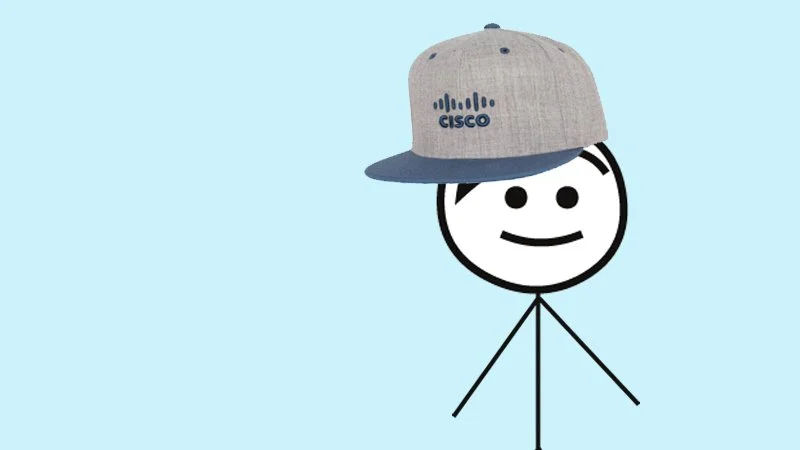

01
2019
Change Management
This is Bob.
A stick figure in a Cisco hat, a Duo authentication crisis, and the highest-performing piece of content Cisco published that year.
The Brief
Get Cisco employees to adopt YubiKey hardware security keys as a backup authentication method.
The Problem
Nobody reads security mandates. Especially not ones that ask them to go order a piece of hardware.
What I Did
Borrowed the "This is Bob. Be like Bob." format. Made the protagonist a stick figure with a Cisco hat, a mobile phone he keeps losing, and a tone that felt like a friend explaining something, not IT assigning it.
"Be like Bob. Get a YubiKey. Securely log in 4 times faster."
#1
Most-viewed content of the year on CEC
5,000+
Clicks through to ordering instructions
Sold out
Entire global YubiKey inventory
Ongoing
Still cited as the Cisco template for IT change management
